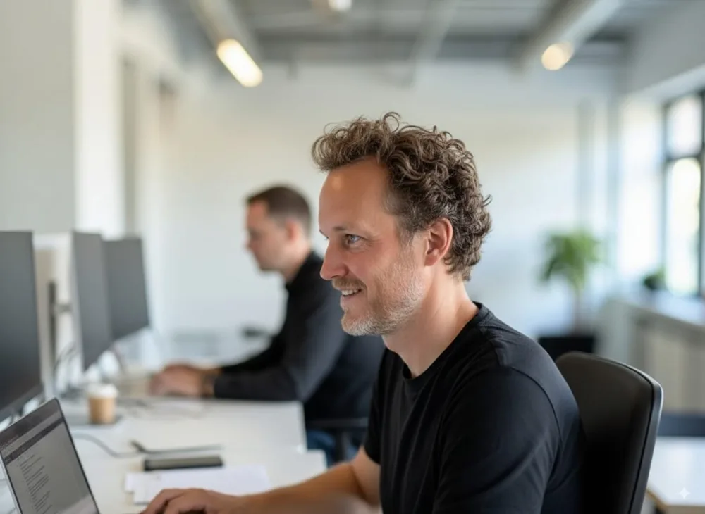
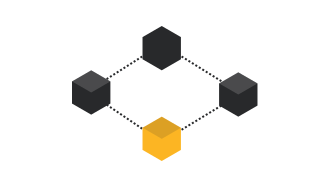
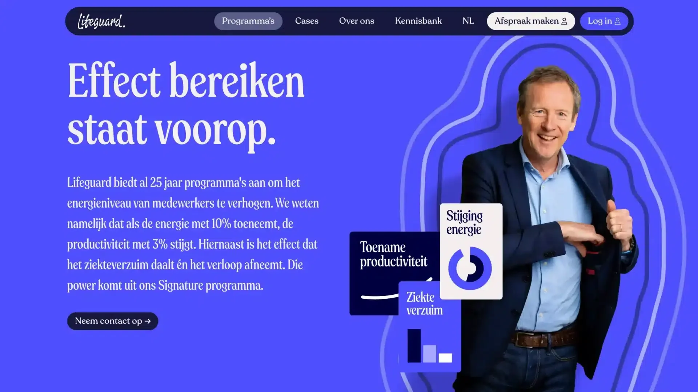
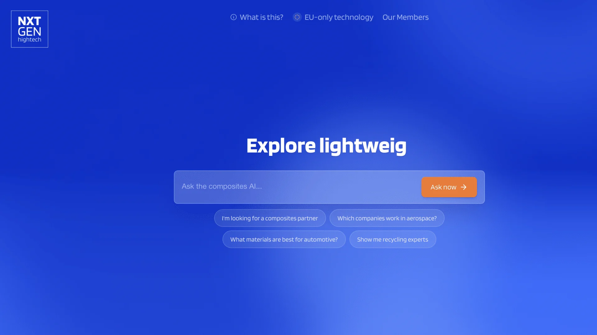
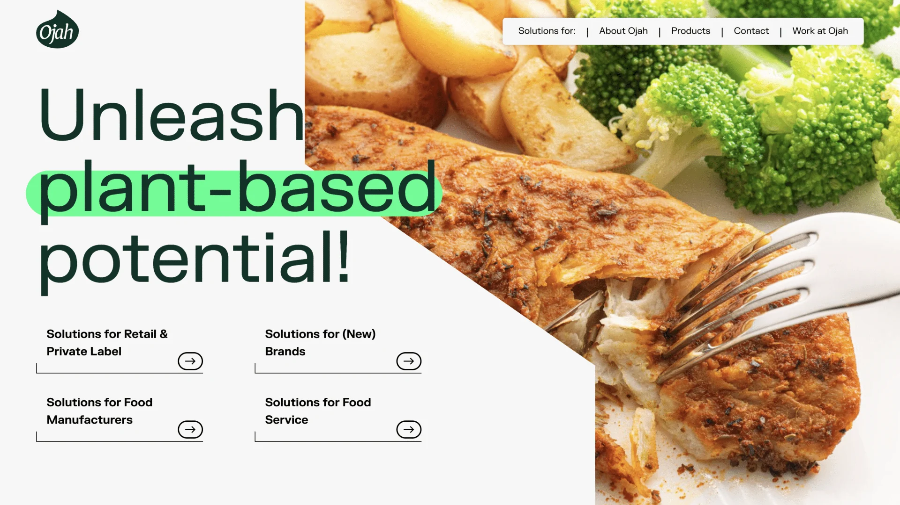
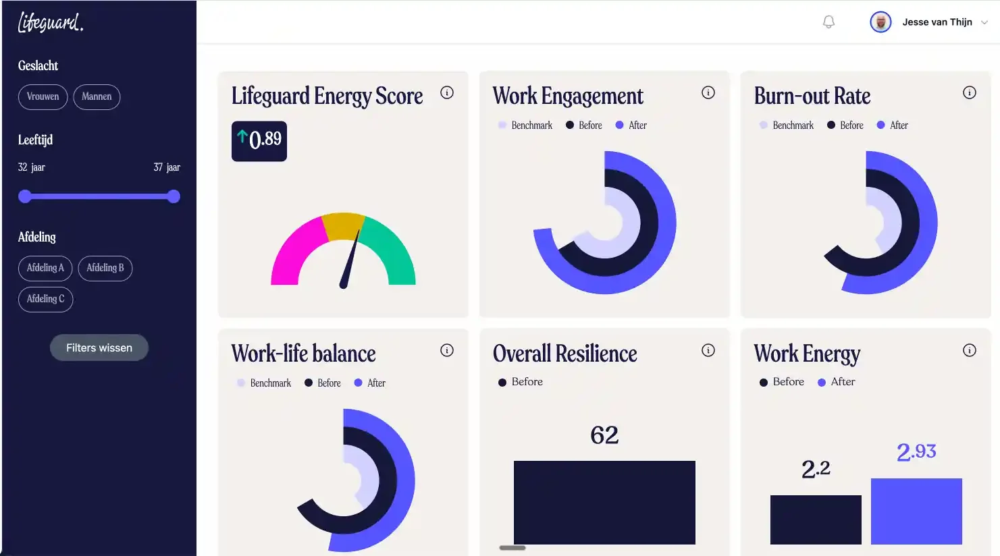

De radicaal efficiënte digitale ontwikkelpartner
Een team van ervaren ontwikkelaars, productmanagers en designers. Strategie, design en development in één hand. We helpen bedrijven vooruit met simpele, toekomstbestendige oplossingen.
Troop Digital unlockt de volle potentie van jouw bedrijf, door je digitaal te transformeren en versnellen.
Upgrade je dienstverlening met eigen software

Upgrade je proces met AI en automatisering
De ingrediënten voor innovatie met succes
-
Technische fundering
Ambities lopen vaak stuk op complexiteit en data. Wij leggen een fundering die meegroeit.
-
Strategische fit
Waarom doen we dit? Wat is het doel, en hoe meten we succes? We maken scherpe keuzes, voor de eerste regel code.
-
Menselijke betekenis
Verder kijken dan het werkt lekker. Mensen omarmen wat betekenis heeft. Zonder motivatie geen adoptie.

Hoe? Start klein. Valideer. Schaal dan op.
-
Dag 1
Start: workshop
Doel scherp, scope strak, grenzen helder. Je weet wat nodig is en wat niet.
-
2 tot 3 weken
Bewijs: proof of concept
Vaste prijs. Gebouwd en getest. We bouwen een eerste versie om te valideren.
-
4 tot 6 weken
Live: in gebruik
Een werkende versie die je team echt gebruikt. Daarna opschalen, of stoppen.
Gemaakt door ervaren specialisten die jouw business snappen.
Troop Digital heeft geen accountmanagers en geen overdracht naar een projectteam. Jan en Jesse leiden elk project zelf, van de eerste strategiesessie tot de livegang.
Co-Troopers
De vaste ring van senior specialisten waarmee we werken.
Werk

Een klantportaal dat de helft van de supportvragen opvangt
Klanten vroegen hun orderstatus op via mail en telefoon. In zes weken bouwden we een portaal waarin ze alles zelf zien.
- −48%
- supportvragen per week
- 6 wk
- van workshop tot live

Rapportages die zichzelf maken
Teamleiders verzamelden elke maandag cijfers uit vijf systemen. Nu staat het dashboard om acht uur klaar.
- 12 u
- bespaard per week
- 1
- overzicht in plaats van vijf systemen

Offertes in minuten in plaats van dagen
Elke offerte ging langs drie mensen en een spreadsheet. Een AI-workflow maakt nu het concept; de adviseur controleert en verstuurt.
- −70%
- doorlooptijd per offerte
- 3 wk
- tot de eerste werkende versie

Onboarding zonder papierwerk
Nieuwe klanten haakten af bij lange formulieren. We brachten de aanvraag terug tot één digitale flow, gekoppeld aan de backoffice.
- +35%
- afgeronde aanvragen
- 4 wk
- van idee tot in gebruik
Veelgestelde vragen
Door klein te beginnen. Op dag 1 starten we met een workshop om doel en scope scherp te krijgen. Binnen 2 tot 3 weken bewijzen we het idee met een proof of concept, en na 4 tot 6 weken staat er iets live dat je team echt gebruikt. Geen tussenlagen en geen overhead: senior bouwers die strategie, design en development in één hand houden.
Elk project heeft een vaste prijs, afgesproken voordat we bouwen en gebaseerd op een strak afgebakende scope. Geen meerwerk. Wat dat voor jouw situatie precies betekent, bespreken we graag in een eerste gesprek.
Daarom beginnen we met een workshop: doel scherp, scope strak, grenzen helder. Je weet wat nodig is en wat niet. Komt er onderweg toch iets bij, dan bespreken we eerst samen wat dat betekent voordat er iets verandert.
Een team van ervaren ontwikkelaars, productmanagers en designers. Strategische en senior bouwers, zonder tussenlagen.
Dat leggen we vooraf helder vast, samen met de rest van de afspraken. Twijfel je, bespreek het dan in een eerste gesprek.
Wij houden strategie, design en development in één hand, met senior bouwers en zonder tussenlagen of overhead. We werken tegen een vaste prijs en beginnen klein: eerst valideren, dan pas opschalen.
Begin met een gesprek
In een half uur bespreken we waar je staat en of we bij elkaar passen. Past het niet, dan zeggen we dat ook.
Plan een gesprek